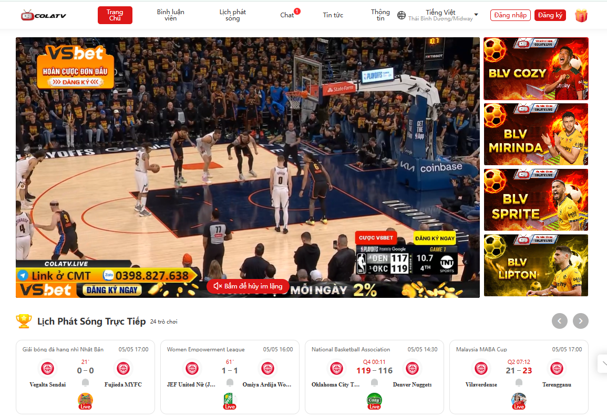
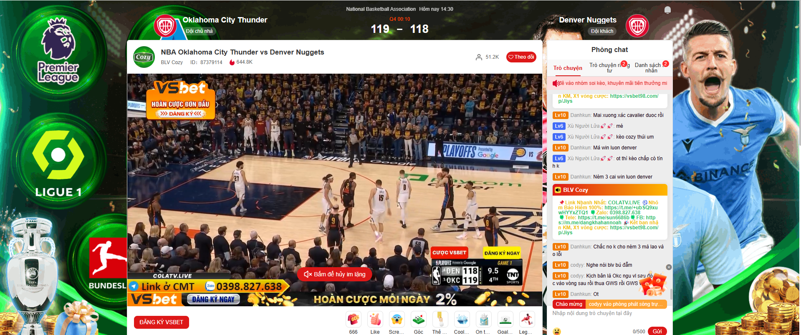
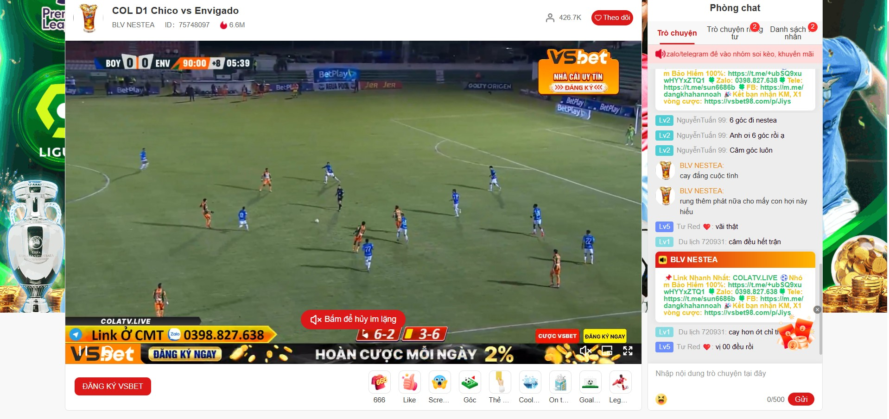
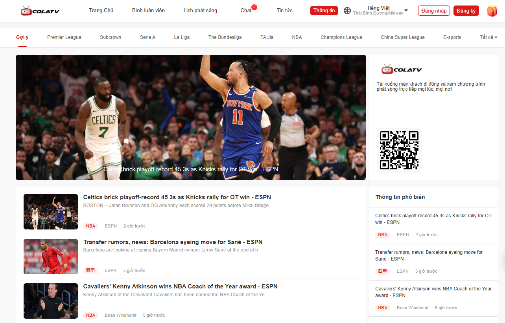
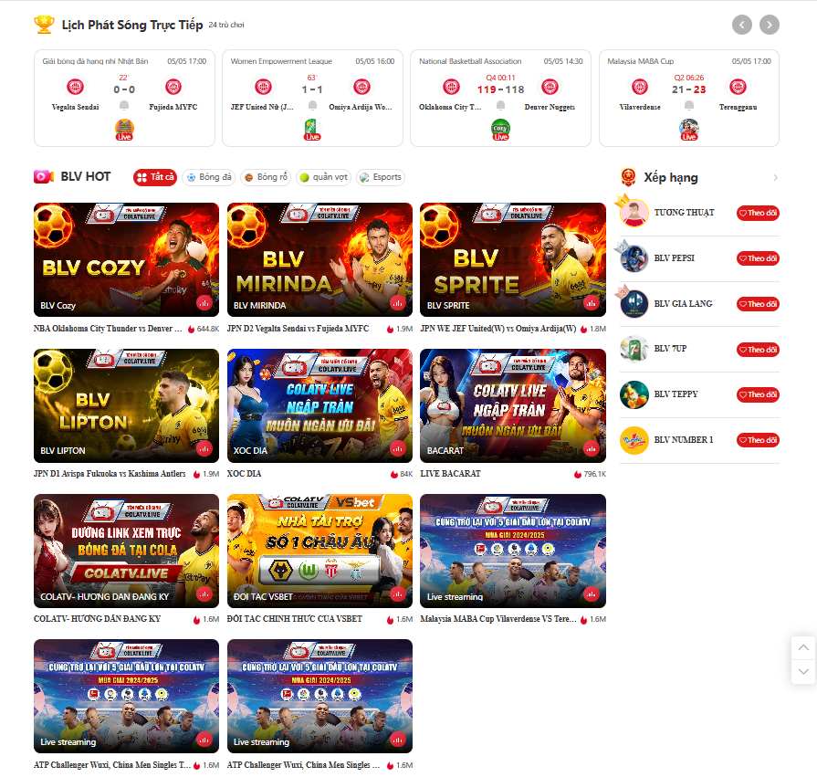

Colatv.live cung cấp các trận đấu trực tiếp bóng đá với chất lượng cao, cập nhật nhanh chóng và miễn phí, giúp người hâm mộ không bỏ lỡ bất kỳ pha bóng nào.
Colatv.live - Trang trực tiếp bóng đá miễn phí, chất lượng cao
Colatv.live là trang web chuyên cung cấp dịch vụ trực tiếp bóng đá với chất lượng hình ảnh sắc nét và tốc độ cập nhật nhanh chóng. Tại đây, người hâm mộ có thể theo dõi các trận đấu từ các giải đấu lớn đến nhỏ trên toàn thế giới, hoàn toàn miễn phí. Hãy truy cập ngay để không bỏ lỡ bất kỳ khoảnh khắc nào của các trận đấu hot.
Giới thiệu chi tiết về trang trực tiếp bóng đá Colatv.live
Thông tin cơ bản về trang trực tiếp bóng đá Colatv.live
Colatv.live là một trong những trang web trực tiếp bóng đá hàng đầu hiện nay, chuyên cung cấp dịch vụ xem các trận đấu từ nhiều giải đấu lớn nhỏ trên toàn thế giới. Với mục tiêu mang đến trải nghiệm xem bóng đá chất lượng cao, Colatv.live không chỉ giúp người hâm mộ theo dõi các trận đấu yêu thích mà còn cập nhật kết quả nhanh chóng và chính xác. Đây là nơi lý tưởng cho những ai không thể xem bóng đá qua truyền hình hoặc muốn theo dõi trực tiếp các trận đấu khi không có cơ hội đến sân. Hãy cùng khám phá những lý do tại sao Colatv.live lại trở thành một địa chỉ đáng tin cậy đối với cộng đồng yêu bóng đá.
Các thế mạnh vượt trội có tại trang trực tiếp bóng đá Colatv.live
Một số ưu điểm nổi bật có tại trang Colatv Colatv.live không chỉ cung cấp dịch vụ xem trực tiếp bóng đá mà còn sở hữu nhiều thế mạnh khiến nó trở thành điểm đến lý tưởng của người hâm mộ. Những đặc điểm nổi bật dưới đây sẽ giúp bạn hiểu rõ hơn về lý do trang web này luôn đứng đầu trong lòng người yêu bóng đá.
Chất lượng hình ảnh sắc nét
Một trong những thế mạnh lớn nhất của Colatv.live chính là chất lượng hình ảnh của các trận đấu xem bong da. Trang web này cung cấp video trực tiếp với độ phân giải cao, giúp người xem có thể thưởng thức những pha bóng sắc nét, chân thực và sống động. Hệ thống truyền tải dữ liệu mạnh mẽ giúp giảm thiểu tình trạng giật lag, mang đến cho người hâm mộ trải nghiệm mượt mà ngay cả khi xem qua mạng internet không ổn định.
Cập nhật nhanh chóng
Luôn cập nhật các thông tin bóng đá nhanh chóng nhất
Colatv.live không chỉ là nơi
xem trực tiếp bóng đá mà còn là trang cung cấp thông tin nhanh chóng về các trận đấu. Người xem có thể
dễ dàng cập nhật tỷ số, thông tin đội hình, thời gian thi đấu và các thống kê khác trong suốt trận đấu.
Việc cập nhật tỷ số trực tiếp và chi tiết của từng trận đấu giúp người hâm mộ không bỏ lỡ bất kỳ khoảnh
khắc nào, dù đang ở bất kỳ đâu.
Đánh giá điểm mạnh, điểm yếu
Trang web Colatv.live có giao diện đơn giản và dễ sử dụng, cho phép người xem dễ dàng tìm kiếm trận đấu yêu thích mà không gặp phải khó khăn. Với thiết kế tối ưu, người dùng chỉ cần vài cú nhấp chuột để bắt đầu xem trực tiếp các trận đấu. Giao diện này đặc biệt phù hợp với cả những người ít quen thuộc với công nghệ, giúp việc trải nghiệm bóng đá trở nên dễ dàng và thoải mái hơn bao giờ hết.
Truy cập miễn phí
Điểm nổi bật nữa của Colatv.live là người dùng có thể truy cập và xem truc tiep bong da mà không cần phải đăng ký hay trả phí. Mọi trận đấu đều được cung cấp miễn phí, giúp người hâm mộ dễ dàng theo dõi các giải đấu quốc tế hay các trận đấu trong nước mà không phải lo lắng về chi phí. Điều này tạo điều kiện thuận lợi cho những ai yêu thích bóng đá nhưng không muốn bị ràng buộc bởi các dịch vụ trả phí.
Một số tính năng HOT có tại trang Colatv.live
Các tính năng đặc sắc có tại trang trực tiếp bóng đá Colatv.live
Bên cạnh việc cung cấp trực tiếp bóng đá hôm nay, Colatv.live còn có nhiều tính năng đặc biệt, mang đến trải nghiệm toàn
diện cho người dùng. Cùng khám phá các tính năng "HOT" mà trang web này cung cấp, giúp bạn dễ dàng theo
dõi mọi trận đấu yêu thích.
Xem lại trận đấu
Colatv.live không chỉ cung cấp dịch vụ xem trực tiếp bóng đá mà còn cho phép người dùng xem lại các trận đấu đã diễn ra. Điều này rất hữu ích cho những ai bỏ lỡ các trận đấu quan trọng hoặc muốn theo dõi lại những pha bóng đặc sắc. Tính năng này giúp người hâm mộ có thể thưởng thức lại những khoảnh khắc ấn tượng từ trận đấu mà không phải lo lắng về việc tìm kiếm các video từ nhiều nguồn khác nhau.
Lịch thi đấu chi tiết
Tính năng xem lịch thi đấu mọi lúc, mọi nơi Ngoài việc cung cấp dịch vụ trực tiếp các trận đấu, Colatv.live còn cung cấp lịch thi đấu chi tiết của tất cả các giải bóng đá lớn nhỏ trên thế giới. Người hâm mộ có thể dễ dàng tra cứu thời gian và ngày giờ của các trận đấu sắp tới, giúp họ không bỏ lỡ bất kỳ trận cầu nào. Lịch thi đấu được cập nhật thường xuyên và chính xác, đảm bảo rằng bạn sẽ luôn nắm được thông tin mới nhất về các giải đấu yêu thích.
Tính năng chat trực tiếp
Colatv.live cung cấp tính năng chat trực tuyến, nơi người hâm mộ có thể trao đổi, bình luận về các trận đấu đang diễn ra. Tính năng này giúp tạo ra một cộng đồng yêu bóng đá, nơi mọi người có thể chia sẻ cảm xúc, thảo luận về các tình huống trong trận đấu và kết nối với những người có cùng sở thích. Đây là một điểm cộng lớn cho Colatv.live, tạo ra một không gian tương tác sôi nổi cho người hâm mộ.
Thông báo trận đấu
 Đa dạng tính năng nổi bật về thông báo trận đấu
Đa dạng tính năng nổi bật về thông báo trận đấu
Colatv.live còn cung cấp tính năng thông báo trận đấu, giúp người dùng không bỏ lỡ những trận đấu quan trọng. Khi có trận đấu sắp diễn ra, người dùng có thể nhận được thông báo qua email hoặc điện thoại, đảm bảo rằng họ luôn biết được thời gian và thông tin về các trận cầu hot. Đây là một tính năng rất tiện lợi và hữu ích cho những người bận rộn nhưng vẫn muốn theo dõi các trận đấu bóng đá.
Lời kết
Với những tính năng vượt trội, Colatv.live đã chứng tỏ mình là một trong những trang web xem trực tiếp bóng đá đáng tin cậy. Nếu bạn là một tín đồ của môn thể thao vua, Colatv.live sẽ là nơi lý tưởng để bạn theo dõi mọi trận đấu hot mà không phải lo lắng về chi phí hay chất lượng.